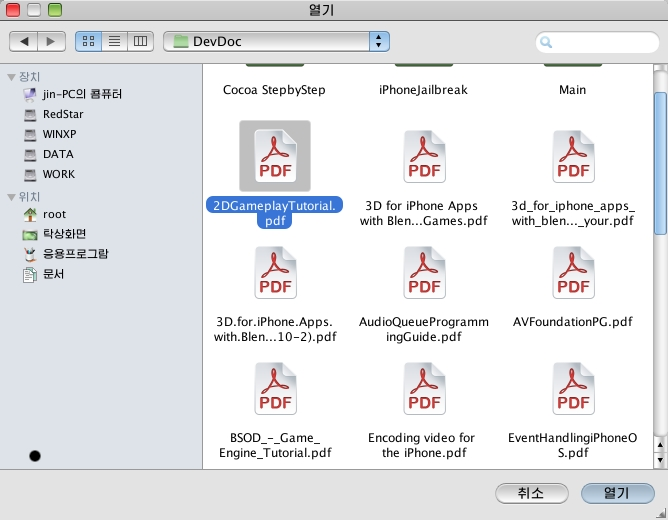

Main Features
You can manipulate a PDF file, work with graphics on it, search the text and print it.
1) Managing PDF file
- Open: open a PDF file.
If
you select “Open”
item  in file menu or main
toolbar, open dialog is displayed.
in file menu or main
toolbar, open dialog is displayed.
- Save: Save changed PDF file.
If
the document is changed, save item is enabled. If you select “Open”
item in file menu or main
toolbar, the docment is saved to the same name.
in file menu or main
toolbar, the docment is saved to the same name.
- Save As
If you select this item, open the save dialog, and then input the file name.
If you select this item, open the print dialog.
2) Viewing the Document
- Scrolling : It enables you to navigate pages as scrolling.
If the size of the document is large than the size of the window, automatically the scroll bar is shown.
- Continues : It enables you to set continues page mode.
If you select the this item in “view” item of menu, viewing of document is changed to continues.
- Zoom In/Out: It enables you to view document at pre-defined rates or proper rate.
If
you select rate setting icon ,
rating menu is shown.
,
rating menu is shown.
If “Zoom to…” is selected, “Zoom to” dialog is shown.
- Page Mode: It enables you to switch Actual Size/Fit Height/Fit Width/ Facing page.
Actual Size is displayed the document to 100%.
Fit Height is fitted the height of document to height of window.
Fit Width is fitted the width of document to width of window.
Facing is displayed two page in window.
Optional Page is displayed the one or more pages in window.
If
you select Optional page icon ,
the window is shown as below.
,
the window is shown as below.
- Goto : It enables you view the first page/previous page/next page/last page/page you select.
If
you select “go
to”menu
or icon of view toolbar, the
dialog is shown as below.
of view toolbar, the
dialog is shown as below.
3) Bookmark
- Managing Bookmark
If the document have the bookmark information, the informations is displayed in this window.
- Managing contents
If you select one item, portable part is displayed in main window.
4) Managing Objects
- Creating Objects
You can make the various objects(line, arrow, rectangle, ellipse, check box, text box).
- Selecting Object
You can select an object by mouse click or Select All item in the Edit menu.
Selection by clicking:
If you click on a created object, it is selected, when it is marked as selected.
You can use Ctrl key to select multiple objects.
If you click on an object with Ctrl key pressed, the object is selected and it is unselected when clicked once again.
Selection by menu:
You can select all the objects in the current page by click on the Edit/Select All menu item.
- Changing the property of objects
If you create the object, the object have the value of line style, arrow style in toolbars, you can change this value in later.
Changing Color:
First, select an object and click on the line color and fill color icons. Then, the color selection window appears where you select a color to change the line color and fill color of the object.
Changing line style/line width:
You select an object
and click on the line width icon
or the line style icon to track the line width/line style menu, where select an item to
change the style and width of the line.
to track the line width/line style menu, where select an item to
change the style and width of the line.
Changing Arrow Style:
You select a line or arrow object and click on the arrow style icon in the object toolbar to track the arrow style menu, where select a style to change the style of the arrow object.
Changing the Attributes of Textbox
It is the same as ordinary objects to change the font color of textbox.
You select an object, and click on the font face, size, bold, italic, underline icons to change its attributes.
- Moving or resizing of object
You can move or resize the created object as you like just as with the word processing program.
Moving an object:
You click the Object/Select menu item or the Object Selection icon to turn into the Object Selection/Move mode.
Then, select an object and move the cursor on the object, when the cursor changes to the moving style, and if you drag the object, the object is moved to the mouse point.
Resizing an Object:
You select an object, when the object is marked as selected, and if you move the cursor to this position, the cursor changes to the resizing style.
Then, move the mouse keeping click to resize the object corresponding to the mouse point.
- Copy/Paste
You can copy and paste an object with this program.
Copying an object:
Select an object, and click on the Copy item in the Edit menu or the Copy item in the popup menu tracked by right clicking, or click on the Copy icon on the main toolbar to copy and put it to the clipboard.
Pasting an object:
After copying an object, it is put into the clipboard, when the Paste item becomes enabled.
You can click on the
Paste item in the Edit menu or the Paste item in the popup menu
tracked by right clicking, or the Paste icon on the main toolbar to paste the object into the current page.
on the main toolbar to paste the object into the current page.
- Deleting objects
You can delete an inserted object.
Select an object you want and press Delete key or Backspace key to delete the selected object.
On the other hand, you can use the Delete item in the Edit menu or the Delete item in the popup menu tracked by mouse right clicking to delete an object.
- Arranging the objects
The program provides with the arrangement function that is to select some objects and arrange them based on an object.
There are some arrangement items such as Left/Right/Center/Top/Bottom/H-Center/Side-by-Side functions.
If you select more than 2 objects, these items become enabled and you can use them.
You select one of these items to arrange selected objects according to the base object.
5) Edit
- Undo/Redo
Undo: Undo operation.
Redo: Redo operation.
- Insert image
If
you select icon ,
Insert Image dialog is
shown.
,
Insert Image dialog is
shown.
- Delete Page
You can delete select page.
If you can select delete item, “Delete Page” dialog is shown.
6) Find
It enables you find the text.
If you select the “find” menu or icon, find dialog is shown.